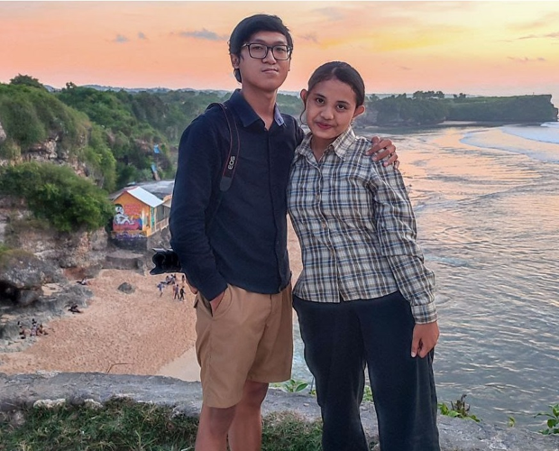

|

KADEK LIANNA SRI WAHYUNI keluarga adalah aset terpenting dalam hidup saya, memiliki keluarga yang cemara dan bahagia adalah sebuah anugrah dari tuhan. Tuhan berperan penting dalam hidup saya,terutama dalam hal berbagi cerita, bertukar pikiran dll. singkat cerita, mempunyai pasangan yang sefrekuensi juga sebuah anugrah dari tuhan, saya bersyukur bisa kenal dengan pacar saya, karena pacar saya yang selalu membantu dalam mengerjakan tugas-tugas kuliah, temen cerita suka maupun duka, temen healing, temen segala partner selain keluarga. menurut saya tidak semua cerita atau masalah bisa diceritakan ke keluarga jadi bisa cerita ke pacar termasuk masalah-masalah dikampus maupun diluar kampus. sekian cerita singkat saya betapa pentingnya keluarga saya bagi saya dan betapa pentingnya memiliki pasangan yang sefrekuensi dan saling support dalam keadaan apapun |
|
| Footer
Dibuat oleh: deklia |
|